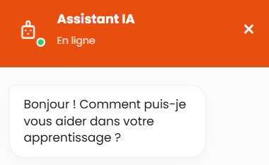

Chatbot Web Intégré et Interface de Dialogue
Agent conversationnel autonome fondé sur la POO, doté d'une indexation textuelle optimisée et d'un thésaurus conceptuel.
Consulter le projetChatbot Web Intégré et Interface de Dialogue
Agent conversationnel autonome fondé sur la programmation orientée objet, conçu pour l'indexation textuelle et l'exploration de graphes sémantiques.
Objectifs
Concevoir une architecture logicielle modulaire et robuste capable de traiter le langage naturel, d'associer des requêtes utilisateurs à un thésaurus conceptuel et de générer des réponses contextualisées de manière autonome.
Compétences
Travail en groupe
Développement collaboratif de la structure globale de l'application. Planification des diagrammes de classes UML et gestion du versioning via Git pour harmoniser l'intégration du moteur et de l'interface.
Travail individuel
Conception et optimisation de l'algorithme d'indexation textuelle inversée. Implémentation du système de recherche multicritère et création de la structure de données du dictionnaire de concepts.
Techniques & Savoir-faire
Maîtrise des principes de la POO (encapsulation, polymorphisme, héritage), manipulation de structures de données complexes, et création d'interfaces utilisateur graphiques fluides en HTML et en CSS.